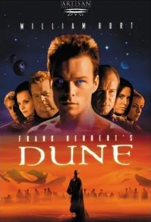

The genetics
The eugenic element is the Bene Gesserit breeding programme: over many generations the sisterhood has manipulated the bloodlines of the noble houses to produce the Kwisatz Haderach, a superhuman male with prescient powers, and Paul's discovery that he is that figure drives his rise as Muad'Dib. Frank Herbert's novel uses this programme to explore the flawed nature of the superman and the future evolution of humanity. According to the Moria review, this miniseries is a faithful adaptation but downplays the Bene Gesserit: their Reverend Mother poses little threat and little time is given to the sisterhood's machinations, so the breeding programme is present more as backstory and destiny than as an active plot thread. No laboratory genetics appears; the programme is selective breeding guided by a religious order.
How genetics is portrayed
- Overall portrayal of genetics
- mixed The breeding programme is a manipulative scheme by a secretive order, yet it produces the hero whose prescience lets him free the Fremen; the miniseries gives the sisterhood's machinations little weight, leaving the eugenic scheme as an ambivalent destiny rather than a clear evil or good.
- Outcome of the genetic intervention
- positive Within the story told, the breeding programme yields Paul, who discovers his powers and leads the Fremen against the Harkonnen occupation; the available source does not describe the darker consequences found in the novel.
- The Bene Gesserit
- ambivalent Aim: ideological, power (negative). The religious sisterhood has manipulated the empire's bloodlines for generations to produce the Kwisatz Haderach, a eugenic project of control; the miniseries downplays them (their Reverend Mother is 'little in the way of threat'), presenting them as manipulative but not as outright villains.
The story
In this television miniseries, the Padishah Emperor Shaddam IV gives House Atreides control of the desert planet Arrakis, or Dune, the only source of the spice that Guild Navigators need for space travel. The rival House Harkonnen resents it, and Baron Vladimir Harkonnen retakes the planet, slaughtering the Atreides with the help of a traitor in their household. Duke Leto's son Paul and his mother, Lady Jessica, a member of the Bene Gesserit religious order, flee into the desert and are taken in by the native Fremen. Under the influence of the spice, Paul begins to see the future and realises he is the Kwisatz Haderach, the figure the Bene Gesserit have sought for generations by manipulating the empire's bloodlines. Taking the name Muad'Dib, he forges the Fremen into an army and sets out to end the Harkonnen occupation by sabotaging spice production.